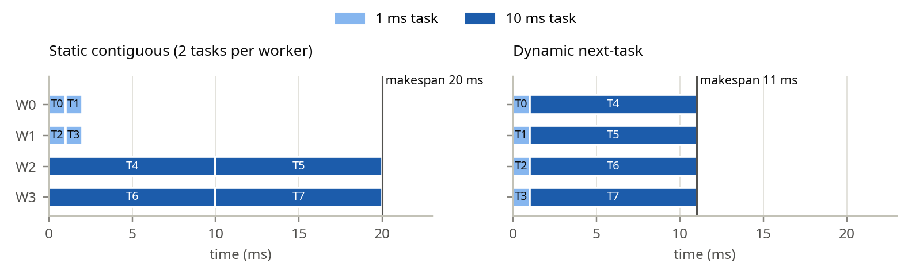
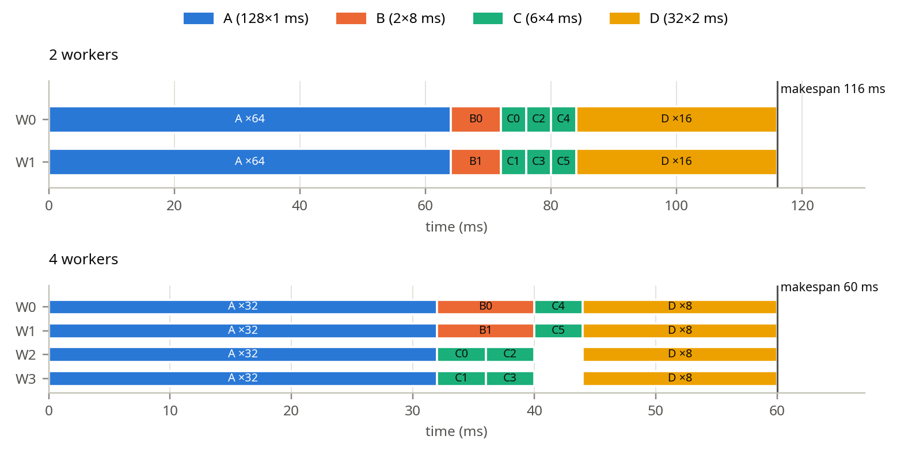

| Student | Izen Abbas |
|---|---|
| Roll number | 23L-0748 |
| Program / semester | BS(CS)-7G · Fall 2026 |
| Instructor | Mubashar Hussain |
| Due date | Wednesday, 14 October 2026 |
| CPU | Intel Core i7-10875H (Comet Lake), one socket |
|---|---|
| Cores / hardware threads | 8 physical cores, 16 hardware threads (2-way SMT) |
| Clock | Turbo Boost disabled (intel_pstate/no_turbo = 1), so every core runs at ≤ 2.3 GHz. This keeps run-to-run timing stable. |
| Caches | 32 KB L1d and 256 KB L2 per core; 16 MB shared L3 |
| Operating system | Ubuntu 26.04.1 LTS, Linux 7.0.0-38-generic |
| Compiler | g++ 15.2.0 with the supplied Makefile flags: -O3 -std=c++11 -Wall |
Interpreting worker counts. With p ≤ 8, every worker can have its own physical core. At p = 16, two workers share each core as SMT siblings. Siblings share the core's execution units, so the second one adds much less than a real core, and gains between p = 8 and p = 16 should be small. The calling thread is not counted in p. It sleeps in Spawn (in join) and in Sleep (on a condition variable), but it busy-waits in Spin. So Spin at p = 16 has 17 runnable threads on 16 hardware threads.
Statistic. Every reported time is the minimum of 5 runs. ./runtasks -n p -i 5 <test> creates a fresh task system for each run and prints the minimum for each implementation. The minimum is used throughout.
Definitions. T1 is the runtime of the supplied serial implementation (TaskSystemSerial): the minimum over all its runs in the sweep, which is 25 runs per workload. Sp = T1/Tp and Ep = Sp/p, where p is the number of worker threads (-n). Because T1 is the serial code, Sp includes every overhead a task system adds. That is why Spawn's S1 can be below 1.
What is timed. The harness times only the test's run()/sync() calls. Creating and destroying a thread pool happens outside the timed region. Spawn creates its threads inside run(), so that cost is always timed. This is the correct comparison for a long-lived runtime, but it hides the one-off pool start-up cost.
Sweep. p ∈ {1, 2, 4, 8, 16} for all 11 supplied synchronous workloads and the Part 4 workloads (part1to4_synchronous build), and for the Part 5 tests (part5_async_deps build).
| Workload | Launches × tasks | One task | Character |
|---|---|---|---|
super_super_light | 400 × 64 | copies 512 ints | almost no work per task |
super_light | 400 × 64 | 512 elements × 32-iteration loop | light tasks |
ping_pong_equal | 400 × 64 | 8192 elements, equal cost | streams 4 MB per launch |
ping_pong_unequal | 400 × 64 | cost falls linearly with task id | non-uniform: task 0 ≈ 2× average, task 63 ≈ 0 |
recursive_fibonacci | 30 × 256 | recursive fib(25) | coarse, compute-bound |
math_operations_in_tight_for_loop | 2000 × 16 | 32 elements × 150 exp/log/mul | medium tasks, many launches |
…_fewer_tasks | 2000 × 9 | 56–64 elements | only 9 tasks per launch |
…_fan_in | 256 × 64, then 1 × 1 | math tasks, then one reduce | serial reduce at the end |
…_reduction_tree | 32 × 64, then 31 × 1 | math tasks, then pairwise reduces | 31 single-task launches |
spin_between_run_calls | 3 launches: 1, 2, 1 tasks | the 2 middle tasks compute fib(40) | at most 2 workers busy |
mandelbrot_chunked | 1 × 128 | interleaved image rows | one coarse launch |
All three parallel task systems assign task ids dynamically, in increasing order: a free worker claims the next unclaimed id from a shared counter. A task is counted as finished only after runTask() returns, never when it is claimed. The calling thread does not execute tasks; it only waits.
TaskSystemParallelSpawn::runstd::atomic<int> next_task(0);
auto worker = [&]() {
for (int id = next_task++; id < num_total_tasks; id = next_task++)
runnable->runTask(id, num_total_tasks);
};
// min(num_threads, num_total_tasks) threads run worker(); the caller joins all of them.
Shared scheduler state.
std::atomic<int>. fetch_add returns each value exactly once, so every id in [0, n) goes to exactly one worker.runnable and num_total_tasks. Shared, but read-only during the launch. Creating a thread makes them visible to it.join(). That is also what makes run() synchronous: it returns only after every worker has run out of ids and exited.No more than num_threads threads are ever created, and none is created that would find no task.
TaskSystemParallelThreadPoolSpinningThe constructor starts num_threads workers that live until the destructor sets shutdown_ and joins them. mutex_ guards the current launch (runnable_, num_total_tasks_, next_task_). tasks_done_, has_work_ and shutdown_ are atomics.
while (!shutdown_) { // worker loop
if (!has_work_) continue; // idle: spin on an atomic load
std::unique_lock<std::mutex> lock(mutex_);
if (next_task_ >= num_total_tasks_) continue; // lost the race for the last task
int task_id = next_task_++;
if (next_task_ == num_total_tasks_) has_work_ = false;
/* copy runnable_ and num_total_tasks_, unlock, run the task */
tasks_done_++; // counted after the task finished
}
// run(): publish the launch under mutex_ (reset counters, has_work_ = n > 0),
// then spin: while (tasks_done_ < n) {}
Idle workers spin on a plain atomic load (has_work_) and take the mutex only when a task is probably available. A spin built from repeated lock/unlock would make idle workers fight working ones for the mutex. The design stays correct across consecutive launches for two reasons:
tasks_done_ for launch k happens before run(k) returns, so the reset in run(k+1) cannot drop or misattribute an increment.TaskSystemParallelThreadPoolSleepingstd::unique_lock<std::mutex> lock(mutex_); // worker loop
while (true) {
work_cv_.wait(lock, [this] { return shutdown_ || next_task_ < num_total_tasks_; });
if (shutdown_) return;
int task_id = next_task_++;
/* copy runnable_ and num_total_tasks_ */
lock.unlock(); runnable->runTask(task_id, num_total_tasks); lock.lock();
if (++tasks_done_ == num_total_tasks_) done_cv_.notify_one(); // last task wakes run()
}
// run(): lock; publish the launch; work_cv_.notify_all();
// done_cv_.wait(lock, [this] { return tasks_done_ == num_total_tasks_; });
All state is guarded by one mutex. After finishing a task, a worker keeps the lock to record the completion and claim its next task, so each task costs one lock round trip. The destructor sets shutdown_ under the lock, calls notify_all() and joins. No thread busy-waits anywhere.
When a worker sleeps, and what wakes it. A worker sleeps on work_cv_ while !shutdown_ && next_task_ >= num_total_tasks_, i.e. while the current launch has no unclaimed task. Two events can make the condition true:
run() publishes a new launch (next_task_ = 0, num_total_tasks_ = n > 0).shutdown_.Both happen while holding mutex_, and both are followed by work_cv_.notify_all(). Finishing a task can never make the condition true, so completions do not wake sleeping workers.
What the calling thread waits for. run() sleeps on done_cv_ while tasks_done_ != num_total_tasks_. Whichever worker raises tasks_done_ to num_total_tasks_, i.e. the last task to finish (not necessarily task n−1), calls done_cv_.notify_one(). For n = 0 the condition already holds and run() returns immediately.
An incorrect interleaving. Suppose completion were tracked at claim time, i.e. run() waited for next_task_ == n or a worker incremented tasks_done_ before calling runTask:
next_task_ becomes n) and releases the mutex.run(), even though task n−1 has not started.run() again, which resets the counters.run() can return one task early as well. The error propagates.My implementation increments tasks_done_ only after runTask() returns, and under the mutex. So tasks_done_ == n implies that every task has returned.
Why the condition is checked in a loop. wait(lock, pred) is while (!pred()) wait(lock);. The loop is required for four reasons:
notify_all() wakes every sleeping worker, but a launch with fewer tasks than workers leaves most of them nothing to do. In spin_between_run_calls, 16 workers wake for a 1-task launch; 15 must re-check and go back to sleep.Added workload. IrregularTask in tests/tests.h gives every item a known cost by busy-waiting on steady_clock. Items in the first half are cheap and items in the second half are expensive (the handout's 1,1,1,1,10,10,10,10 pattern). Each task processes chunk consecutive items, so a launch has ⌈N/chunk⌉ tasks, and every item must be processed exactly once. It runs through the existing task systems; no separate scheduler was written.
irregular_example_dynamic / irregular_example_static: the handout's 8 items (1, 1, 1, 1, 10, 10, 10, 10 ms). Chunk 1 gives 8 tasks, claimed next-task. Chunk 2 gives 4 contiguous tasks, so with 4 workers each worker gets exactly one block: the static contiguous assignment.irregular_chunk_{1,16,256,4096,65536}: N = 218 fine-grained items costing 0.1 µs (first half) or 1 µs (second half), in chunks of 1 to 65536 (= N/4) items per task.
| Assignment | W0 busy | W1 busy | W2 busy | W3 busy | Makespan | Mean utilization |
|---|---|---|---|---|---|---|
| Static contiguous: Wi gets tasks 2i, 2i+1 | T0+T1 = 2 ms (10%) | T2+T3 = 2 ms (10%) | T4+T5 = 20 ms (100%) | T6+T7 = 20 ms (100%) | 20 ms | 44 / (4×20) = 55% |
| Dynamic next-task | T0, T4 = 11 ms (100%) | T1, T5 = 11 ms (100%) | T2, T6 = 11 ms (100%) | T3, T7 = 11 ms (100%) | 11 ms | 44 / (4×11) = 100% |
Utilization = busy time ÷ makespan. Under static assignment, W0 and W1 finish their two 1 ms tasks at t = 2 ms and then sit idle for 18 ms, while W2 and W3 each run two 10 ms tasks back to back. With dynamic assignment, the four 1 ms tasks are claimed first. At t = 1 ms every worker claims one 10 ms task, and all finish at 11 ms. That equals total work ÷ p = 44/4, so it is optimal: 1.82× better than static.
part5_async_deps/tasksys.cpp, sleeping pool)struct Launch { IRunnable* runnable; int num_total_tasks, next_task, tasks_done, unmet_deps;
std::vector<TaskID> dependents; }; // launches waiting for this one
std::unordered_map<TaskID, Launch> launches_; // unfinished launches only
std::deque<TaskID> ready_; // deps satisfied, tasks left to hand out
// one mutex_ guards everything; work_cv_ wakes workers, done_cv_ wakes sync()
runAsyncWithDeps, all under the mutex. It gives the launch the next id (0, 1, 2, …, so ids are unique). For every dependency still in launches_, it appends the new id to that dependency's dependents and increments unmet_deps; a dependency that is no longer in the table has already finished. If unmet_deps == 0, the launch goes into ready_ and notify_all() wakes the workers. It then returns without waiting.ready_ is non-empty, then claims the next task of the launch at the front. When the last task of that launch has been claimed, the launch leaves ready_, so other workers move on to the next ready launch while its stragglers finish. Independent ready launches therefore run concurrently. After runTask returns, the worker relocks and increments tasks_done. If that was the last task, it calls launchFinished(id).launchFinished removes the launch from the table and decrements unmet_deps of each dependent. Dependents that reach 0 enter ready_ (with notify_all). If the table is now empty, it calls done_cv_.notify_all().sync() waits on done_cv_ until the table is empty. run(r, n) is runAsyncWithDeps(r, n, {}) followed by sync(), so it stays a correct synchronous launch. A launch with 0 tasks is finished as soon as it becomes ready. The destructor calls sync(), then stops and joins the workers.abcd_dag_async builds the handout graph with exact busy-wait task costs:
The first task of each launch to start checks that every dependency launch is complete, meaning its last task has already finished. Each launch counts its started and finished tasks, which must both equal its task count. All launches must be done after sync().
abcd_dag_split_async is the same graph with B replaced by four independent sub-launches B1–B4, each of 2 tasks × 2 ms (the same 16 ms of work); D depends on B1–B4 and C. Because the task costs are exact, the measured times can be compared directly with the schedules below. The cost is wall-clock busy-waiting, so two workers sharing a core still each take exactly 1 ms per A task. Real computation would slow down on SMT siblings.
Ready sets and mandatory orderings. At submission, only A is ready. When the last task of A finishes, B and C become ready at the same instant and may run concurrently: there is no edge between them, and their 8 tasks can share the workers. D becomes ready only when both B and C have finished. The mandatory orderings are A→B, A→C, B→D and C→D (so A→D); B and C are unordered.
Total work.
Critical-path lower bound. Assumptions:
Under these assumptions, a launch lasts at least as long as its longest task: A 1 ms, B 8 ms, C 4 ms, D 2 ms. The paths are A→B→D = 1 + 8 + 2 = 11 ms and A→C→D = 1 + 4 + 2 = 7 ms, so the critical path is T∞ = 11 ms (through B). With p workers, Tp ≥ max(T∞, W/p), giving T2 ≥ max(11, 116) = 116 ms and T4 ≥ max(11, 58) = 58 ms.
Schedules for 2 and 4 workers. Figure 5.1 is the greedy schedule my runtime follows: free workers claim the next task, and ready launches are served FIFO (B before C). Both schedules respect the dependencies, since B and C start only after the last A task and D only after the later of B and C. They also respect capacity: at most p tasks run at any time.

Why doubling the workers does not halve the time. The same greedy schedule gives 232, 116, 60, 32 and 20 ms for p = 1, 2, 4, 8 and 16, i.e. ×2.0, ×1.93, ×1.88 and ×1.6 per doubling. Three effects stop the halving:
At p = 16, A takes 8 ms, B/C takes 8 ms and D takes 4 ms. The time is now dominated by B's 8 ms tasks, not by the amount of work.
Bookkeeping when the final task of a launch finishes. The worker relocks, raises tasks_done to num_total_tasks, and in launchFinished:
runAsyncWithDeps.dependents list, decrementing each dependent's unmet_deps.ready_, with notify_all).sync() if no unfinished launch remains.Only the direct dependents of the finishing launch can change state at that instant, and only those for which it was the last unfinished dependency. Nothing else is scanned. In this graph, A's completion makes both B and C ready. Whichever of B and C finishes first changes nothing (D still has one unmet dependency). The later one makes D ready.
A race that could start a dependent early, and the invariant that prevents it. Suppose a launch were treated as complete when its last task was claimed (next_task == n) rather than when it finished:
strict_diamond_deps_async and my abcd_dag_async detect exactly this.A second variant is check-then-register without the lock. A new launch sees dependency X as unfinished. X then finishes and processes a dependents list that does not yet contain the new launch. The new launch then registers and waits forever.
The invariant: a launch is in ready_, or has any task handed out, only if every launch it depends on has tasks_done == num_total_tasks, i.e. all of its runTask calls have returned. It holds because of three facts:
unmet_deps counts exactly the dependencies that were unfinished at registration, and registration and completion are serialized by the same mutex.unmet_deps is decremented only by launchFinished, which runs after the last runTask has returned.ready_.